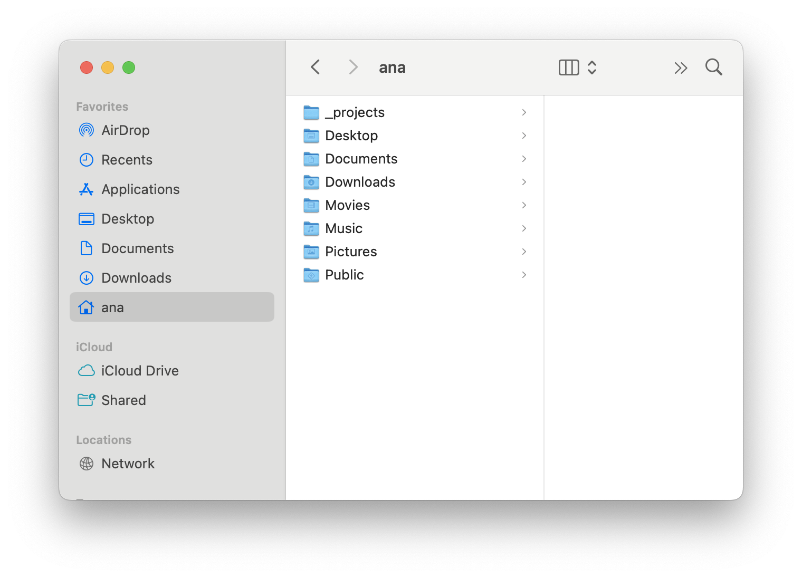

3 Moving around in the terminal
Now that you know where you are (pwd), it’s time to explore what’s around you. Specifically, we’ll start by moving between different folders on your computer.
In the programming world, folders are usually called directories. You’ll hear both words out in the world — they mean the same thing.
3.1 What’s in this folder? (ls)
lsstands for list.
If you want to see what’s inside the current directory, you use the ls command.
As we said in Chapter 1, the terminal lets you interact with files the same way you would with File Explorer on Windows and Finder on a Mac — except you’ll be using text instead of clicking.
When your first launch terminal, you’ll see a ~ (called a tilde), which lets you know you’re in your base or home directory. We want to ask the terminal to tell us what is inside this home directory.
To ask terminal what’s inside a directory:
Type the following in your terminal:
lspress
Enter/returnto run the command.
Terminal will respond to your command with a list of files and folders like this:
_projects Desktop Downloads Movies Pictures
Documents Library Music Public Your list may be different depending on what’s in your computer’s home folder. That’s ok!
In any case, the list of directories returned by Terminal will match the folders you would see if you clicked on your home directory in the Finder on a Mac or in File Explorer on a Windows machine. For example, the list of folders listed in the example response above matches what we see in our home directory using Finder below.

Quick Recap on the ls command:
lsis short for “list.”- It literally asks terminal, “list what’s here.”
3.2 Moving around (cd)
cdstands for change directory.
Seeing what’s around us in a folder is nice, but what if you want to go into one of those folders?
In terminal, we use the cd command – shorthand for “change directory” – to move into and out of folders.
Suppose you ran your ls command and see a folder called Documents. If you wanted to move into that folder, you’d do the following:
Type the following command in your terminal:
cd Documentspress
Enter/returnto run.
Now you’re inside the Documents directory!
Now let’s try running the ls command again:
Type the following in your command line:
lsHit
Enter/returnto run.
You should see a different list of files and/or folder names than you did when you ran the same command inside the home directory — now showing the contents of your Documents folder.
Nice job — you just moved between directories!
3.3 How Can You Tell Where You Are Now? (pwd)
pwdstands for print working directory.
There are a couple ways to make sure you are where you think you are in the Terminal.
The first is to look at the command prompt line inside your terminal window again.
You should see something like:
Anas-MacBook-Air:Documents ana$
In the current directory space (where there used to be a ~), you should see the name of the name of the folder you’re currently inside. If you followed the steps above to get into your Documents folder, for example, you should now see the name of the Documents folder. Remember if you’re ever unsure where you are, terminal will tell you in the prompt!
If you’re still not sure, remember you can use your new friend the pwd (“Print Working Directory”) command from chapter 1 by typing and running:
pwdTerminal should now show something like:
/Users/yourname/Documents
or
C:\Users\yourname\Documents
3.4 Getting out of folders (cd ..)
Ok now that we’ve moved into folders, what if you want to go back out of it to the folder you came from?
To go back up a directory:
type and run the following command:
cd ..
The two dots .. simply mean “the folder above this one.”
If you run the pwd command again, you’ll see you’re back to where you started!
3.4.1 Quick recap on cd commands
Here are a few handy shortcuts you’ll want to remember:
| Command | What it does |
|---|---|
cd |
Go back to your home directory. |
cd .. |
Move up one directory. |
cd foldername |
Move into a folder. |
3.4.2 Folder names with spaces
If the folder name you’re trying to access has spaces (like My Documents), you’ll need to put it in quotes:
cd "My Documents"Or you can use a backslash to “escape” the space like:
cd My\ DocumentsLike we mentioned before, terminal is particular about the way you speak to it. For it to understand you, you’ve got to speak its language. But this is another reason why naming your files and directories cleanly using a naming convention like snake_case or kebab-case will help you work more efficiently. Tab completion, which we cover below, is also helpful navigating around these kinds of file and folder with spaces in the names.
3.5 📝 Mini exercise
Own your own, try this:
- Open your terminal.
- Type and run
pwdto see where you are. - Use
lsto list what’s inside. - Pick a folder you see (try something other than your
Documentsfolder). cdinto that folder.- Use
pwdagain to check that you moved. cd ..to come back up.
Take your time. Play around.
If you get lost, remember you can just type the following command to jump back to your home directory:
cd3.6 🔥 Pro Tip: speed up with tab completion
Ok, now that you’ve got some practice typing things into terminal, we’ll let you in on a big time-saver: when you start typing a folder name, you don’t have to type the whole thing.
Hit the Tab key after typing part of your folder name and the terminal will try to auto-complete it for you. Now, if you’ve got more than one folder with similar names, you may have to add more characters till it can successfully do so.
Let’s see it action by doing the following:
Type out the following command, but don’t run:
cd DocNow, press the
Tabkey.
If there’s a Documents folder, terminal will fill in the rest automatically!
Huge time saver.
Remember, you’ll still need to hit Enter / return to run the command and move into the Documents folder.
3.7 🎯 Checkpoint
In this chapter you’ve learned:
- How to see what’s inside a folder (
ls). - How to move into a folder (
cd foldername). - How to move back up (
cd ..). - How to use
Tabto speed things up.
At this point you’ve started to learn some of the basics of “speaking” terminal.
Next up:
We’ll learn how to create your own files and folders in the terminal. When you’re ready, head to the next chapter!